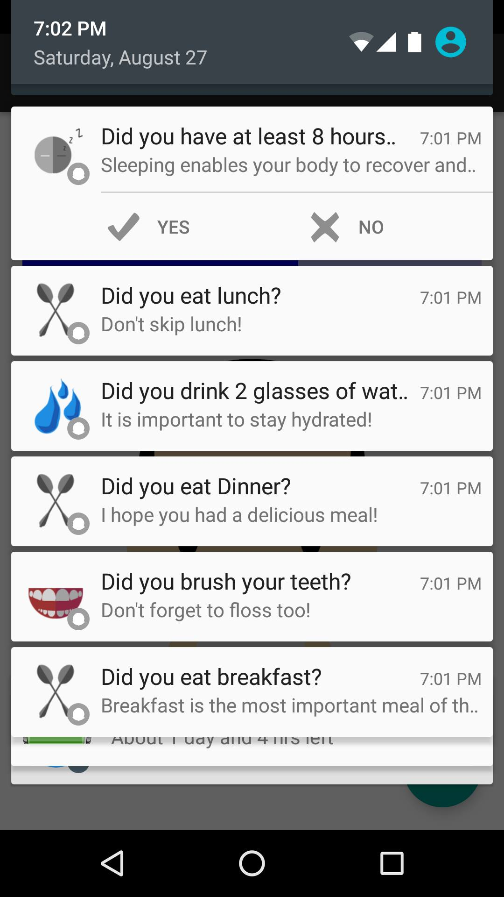
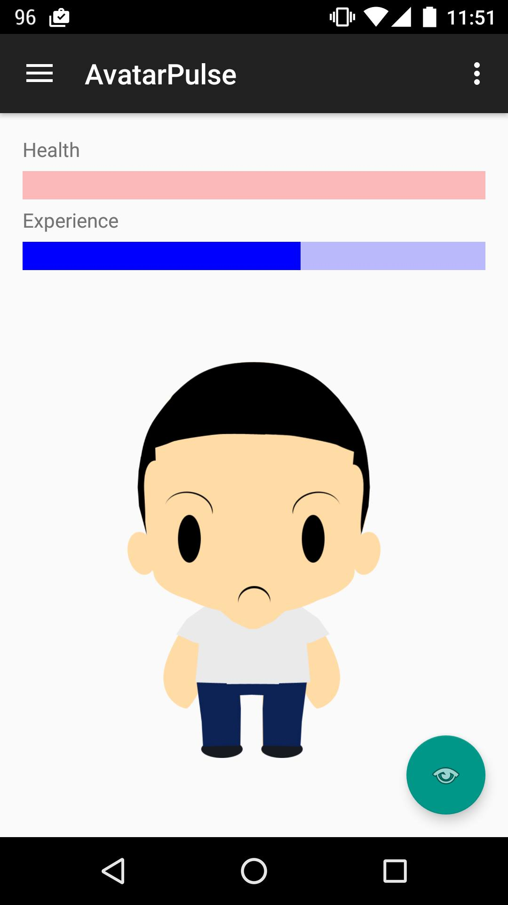

AvatarPulse
Android Development
Together with my partner, Shadwell Da Cunha, we created AvatarPulse, an application, for the Osler Health Contest. The contest required a video pitch in order to qualify for the prototyping of the application.
The application that we created focused on encouraging healthy habits to prevent illnesses. Specifically, the contest required us to create an application that serves the purpose of educating the people of Ontario about public health resources through the use of gamification. We incorporated the gamification aspect through the use of an avatar, that has a health bar. The user can interact with their avatar by completing daily tasks. These tasks include whether the user drank 8 cups of water, ate breakfast/lunch/dinner, brushed their teeth, took a shower, and etc. Throughout the day, tasks will be sent through push notifications. The user is then required to select yes or no. Selecting no will deplete a certain amount of HP from the avatar, and a yes will heal a certain amount of HP.
Aside from encouraging healthy habits, the application also has another aspect that allows the user to report symptoms that they are currently feeling. For example, if the user has a headache, they can report their headache. Then they will be directed to go to the nearest ER or the nearest local health care centre depending on their current condition, and also their current geolocation. In a way, this educates the user by teaching them whether their condition requires them to go to the ER. We wanted to emphasize on the issue where many people go to the ER for small conditions, specifically colds, when they can potentially go to a local health centre for the same treatment. Therefore, by routing people to the correct facilities, wait times at ERs and health centres will decrease dramatically as less people are going to the wrong facilities.
Screenshots of the application:

